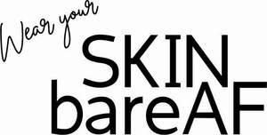

Trade Mark Journal No.2025/036 5 September 2025
UK00004253692 23 August 2025 (3)

- Class 3
- Skin care cosmetics; Exfoliants for the care of the skin; Skin care mousse; Essences for skin care; Skin care preparations; Skin care oils [cosmetic]; Skin care lotions [cosmetic]; Skin care creams [cosmetic]; Cosmetic creams for skin care; Cleansing milks for skin care; Milky lotions for skin care; Skin care creams, other than for medical use; Skin care oils [non-medicated]; Cosmetic preparations for skin care; Foot masks for skin care; Hand masks for skin care; Skin, eye and nail care preparations; Non-medicated skin care preparations; Perfumed oils for skin care; Wrinkle removing skin care preparations; Hair care creams; Body care cosmetics; Hair care serums; Hair care lotions; Hair care serum; Cosmetics for use in the treatment of wrinkled skin; Hair care creams [for cosmetic use]; Hair care lotions [for cosmetic use]; Beauty creams for body care; Hair care masks; Lotions for face and body care; Cosmetic products in the form of aerosols for skin care; Cosmetics for the treatment of dry skin; Sun care lotions; Sun care lotions [for cosmetic use]; Skin moisturizer; Skin moisturizers; Soaps for body care; Cosmetics for protecting the skin from sunburn; Hair care agents; Hair care preparations; Cosmetic hair care preparations; Cosmetic preparations for body care; Facial care preparations; Skin lotions; Lotions for the skin; Skin lotion; Deodorants for body care; Skin moisturisers; Skin make-up; Preparations for the care of the body; Skin cleansers; Eye care products, non-medicated; Beauty care cosmetics; Skin hydrators; Skin moisturizers used as cosmetics; Skin creams; Creams for the skin; Body cleaning and beauty care preparations; Oil baths for hair care; Skin lighteners; Moisturizing preparations for the skin; Skin cleansers [cosmetic]; Skin cleansing lotion; Beauty care preparations; Cosmetic nail care preparations; Skin relief serum [cosmetic]; Moisturising skin lotions [cosmetic]; Non-medicated body care preparations; Skin creams [for cosmetic use]; Non-medicated skin serums; Cosmetic creams for the skin; Skin creams [cosmetic]; Skin balms [cosmetic]; Cosmetic creams for dry skin; Skin moisturizer masks; Colour cosmetics for the skin; Oils for the skin; Skin cream; Nail care preparations; Moisturising skin creams [cosmetic]; Sun care preparations for cosmetic use; Skin cream [for cosmetic use]; Skin care (Cosmetic preparations for -); Skin emollients; Skin moisturiser; Skin conditioners.
Jennifer Jane Moody